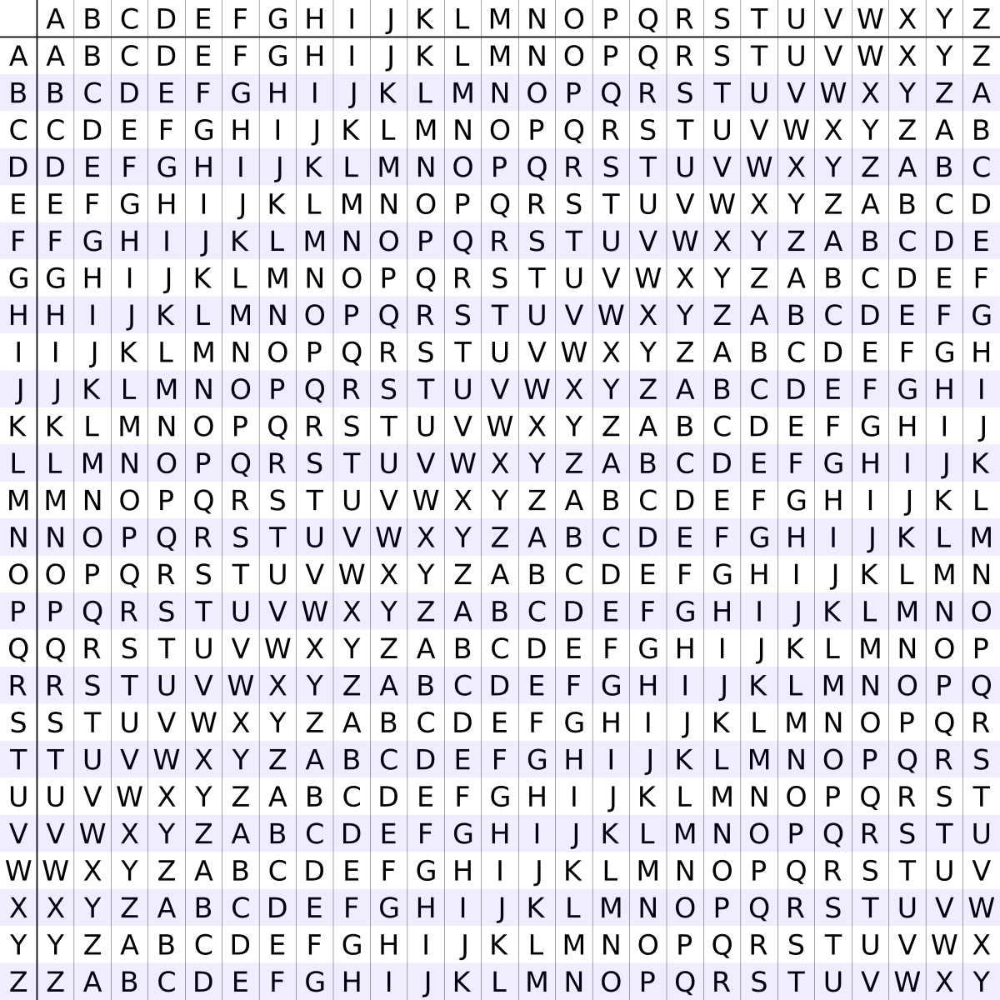
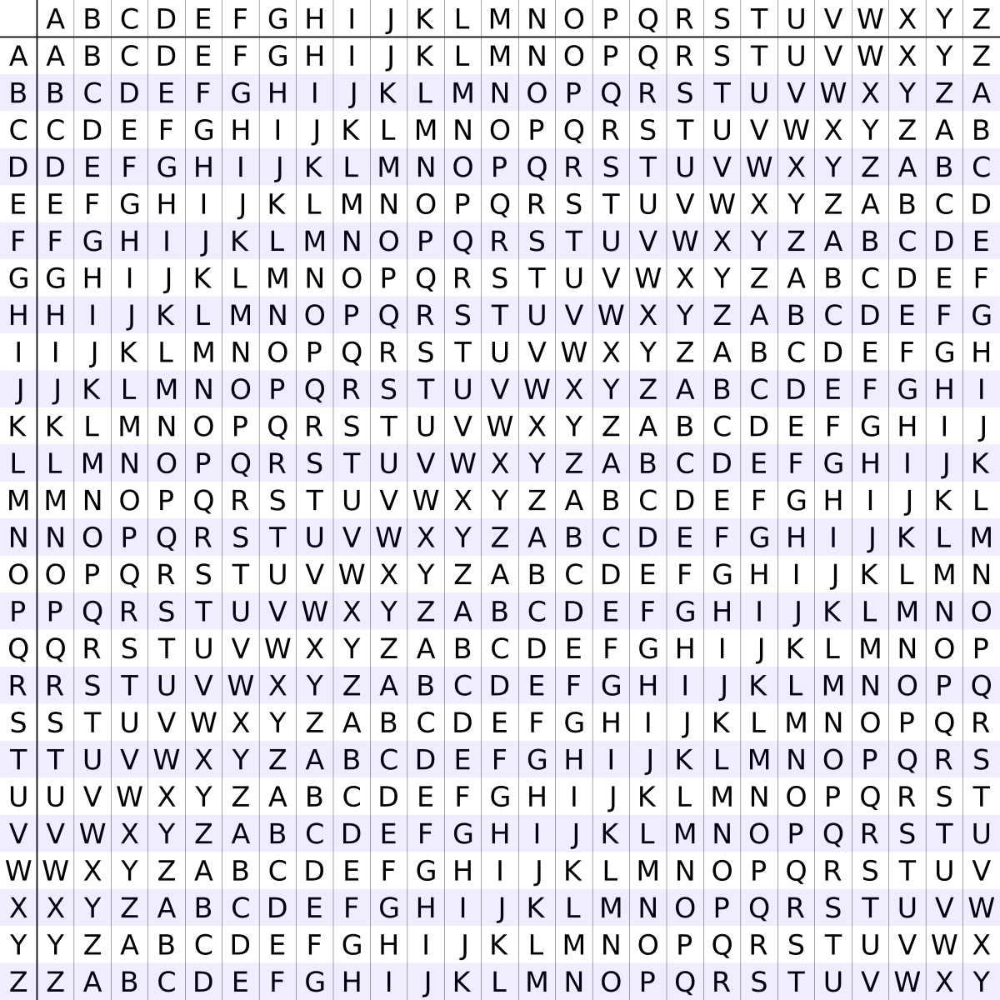

Jeu web d'introduction à la cryptographie
J'ai perdu
Point Historique
Même si l'on connaissait depuis fort longtemps les faiblesses de la cryptographie par substitution, il n'y eut pas entre César et le XVIe siècle de véritable nouveau procédé cryptographique, à la fois sûr (pour les moyens de l'époque) et facile à utiliser !Blaise de Vigenère, né en 1523, fut l'initiateur d'une nouvelle façon de chiffrer les messages qui mit en échec les cryptanalystes trois siècles durant. Vigenère était un personnage à multiples facettes, tantôt alchimiste, écrivain, historien, il était aussi diplomate au service des ducs de Nevers et des rois de France.
C'est en 1586 qu'il publie son Traité des chiffres ou Secrètes manières d'écrire, qui explique son nouveau chiffre, le chiffre de Vigenère.
Principe
Ce chiffrement introduit la notion de clé. Une clé se présente généralement sous la forme d'un mot ou d'une phrase. Pour pouvoir chiffrer le texte, chaque caractère utilise une lettre de la clé pour effectuer la substitution. Plus la clé est longue et variée, mieux le texte est chiffré.Le principe consiste à utiliser successivement plusieurs systèmes de César (plusieurs substitutions) avec des décalages différents.
Exemple avec la clé KEY et le message MESSAGE: M est chiffré par le chiffre de César avec la clé K, puis E avec la clé E, S avec la clé Y, puis on recommence : S avec la clé K, A avec la clé E, G avec Y, et E avec K.
Mathématiquement, on identifie les lettres de l'alphabet aux nombres de 0 à 25 (A=0, B=1...). Les opérations de chiffrement et de déchiffrement sont, pour chaque lettre, celles du chiffre de César. En désignant la ième lettre du texte clair par Texte[i], la ième du chiffré par Chiffré[i], et la ième lettre de la clé, répétée suffisamment de fois, par Clé[i], elle se formalise par :
Chiffré[i] = (Texte[i] + Clé[i]) modulo 26
Texte[i] = (Chiffré[i] - Clé[i]) modulo 26
où x modulo 26 désigne le reste de la division entière de x par 26. Pour le chiffrement il suffit d'effectuer l'addition des deux lettres puis de soustraire 26 si le résultat dépasse 26. Pour le déchiffrement il suffit d'effectuer la soustraction et d'additionner 26 si le résultat est négatif. Le déchiffrement est aussi une opération identique à celle du chiffrement pour la clé obtenue par Clé'[i] = 26 - Clé[i].
Outil indispensable du chiffrement de Vigenère
Pour réaliser directement les opérations de chiffrement et de déchiffrement possédant la clé, un outil indispensable devient "la table de Vigenère".
Wikipédia,Vigenère Cipher
Pour utiliser le chiffre de Vigenère, il faut avoir en sa possession : la table de Vigenère (représentée ci-dessus), une phrase à modifier pour lui donner un sens incompréhensible et un mot clé.
Prenons un exemple concret :

Prenons un exemple concret :
Phrase : je suis en vacances en Espagne.
Mot clé : balais.
Chiffrement
Pour que ça marche il faut qu'il y ait le même nombre de lettres dans le mot clé que dans la phrase. On répète à cette fin le mot balais jusqu'à ce qu'il y ait autant de lettres dans le mot clé que dans la phrase. Cela donne :
| Phrase: | j | e | s | u | i | s | en vacances en Espagne | |||||||||||||||||||
| Mot clé: | b | a | l | a | i | s | b | a | l | a | i | s | b | a | l | a | i | s | b | a | l | a | i | s | b |
Maintenant qu'on a autant de lettres dans la phrase que dans le mot clé, voyons comment transformer cette phrase banale en une phrase chiffrée, incompréhensible pour les personnes ne connaissant pas cette méthode de chiffrement.
Pour cela il suffit de prendre la colonne correspondant à la première lettre de la phrase et la rangée (ligne horizontale) de la première lettre de la clé, et au croisement de ces lignes vous trouverez une lettre étant la première lettre de votre phrase chiffrée.
Ce qui donne avec notre exemple au croisement de la colonne J (première lettre du mot je) et de la rangée B (première lettre du mot-clé balais) la lettre K pour chiffrer la lettre J de je.
Pour chiffrer le E (seconde lettre du mot je) on croise la colonne E avec la rangée A (seconde lettre de balais) ce qui donne un E;
pour chiffrer le S (troisième lettre de la phrase à chiffrer) du mot suis on croise la colonne S avec la rangée L (troisième lettre de balais) ce qui correspond à la lettre D et ainsi de suite: la phrase à chiffer donnera la suite suivante de lettres : ke duqk fn gaksocps mf fsaaoff.
Déchiffrement
Pour déchiffrer il suffit de prendre la colonne correspondant à la première lettre de la clé et de chercher dans cette colonne la lettre correspondant à la première lettre de la phrase codée, elle sera sur la ligne de la première lettre de la phrase normale (lettre qui se trouve dans la colonne la plus à gauche).Ainsi dans l'exemple choisi: dans la colonne de B (la première lettre de balais) le K (première lettre du message codé) est sur la ligne de la lettre J (colonne de gauche). Ensuite dans la colonne A (seconde lettre du mot-clé balais) la seconde lettre du mot codé, le E, donne E dans la colonne de gauche. On a donc obtenu les lettres J et E, qui correspondent au je du début du message original !
Il n'y a plus qu'à reproduire cette étape pour toutes les lettres.
Cryptanalyse
Si l'on connait le nombre de symboles que comporte la clé, on peut procéder par analyse de fréquences en divisant le texte codé en autant de parties que de lettres dans la clé. On peut en effet regrouper ensemble toutes les lettres codées que l'on sait être codées par la même lettre du mot-clé. il devient possible de procéder par analyse de fréquences sur chacun des sous-textes déterminés en sélectionnant des lettres du message clair à intervalle la longueur de la clef (autant de sous-textes que la longueur de la clef).C'est l'attaque bien connue sur les chiffrements mono-alphabétiques.
Pour déterminer la longueur de la clé, il faut chercher des répétitions de séquences (par exemple de 3 lettres), en faisant le pari qu'elles correspondent à un même texte clair chiffré avec la même clé. Puis il faut regarder la distance entre ces répétitions en assumant qu'elle est un multiple de la longueur de la clé. Enfin, il faut prendre le diviseur commun et avec une bonne probabilité, on trouve la longueur de la clé.
Pour chaque longueur de clé, utiliser la cryptanalyse de César sur chacun des sous-textes.
Programme informatique de cryptanalyse
Le programme suivant en Python calcule la longueur de la clef utilisée en cherchant à maximiser l'indice de coïncidence.
#frequence des lettres
frequence_theorique = [8.4, 1.06, 3.03, 4.18, 17.26, 1.12, 1.27, 0.92, 7.34, 0.31, 0.05, 6.01, 2.96, 7.13, 5.26, 3.01,0.99, 6.55, 8.08, 7.07, 5.74, 1.32, 0.04, 0.45, 0.3, 0.12]
# fonction decaler = chiffre de cesar de clef d
decaler = lambda code, d : ''.join([chr((ord(lettre)- 65 + d) % 26 + 65)if lettre.isalpha() else lettre for lettre in code])
def calculer_IC (code, pas):
"""
calcule l'indice de coincidence de 'code'
en decoupant'code' en 'pas' sous-textes
"""
somme = lambda nb : nb * (nb - 1)
IC = []
for i in range (pas):
nb_lettre = [0] * 26
for compteur, lettre in enumerate(code [i::pas]):
nb_lettre [ord(lettre)- 65] += 1
IC.append(sum(map(somme, nb_lettre)) / float(compteur * (compteur + 1)))
return sum(IC) / float(len(IC))
def calculer_decalage (code):
"""
casse un chiffre de cesar en renvoyant la clef utilisee
"""
longueur = float(len(code))
m = [0, 100]
for i in range (26):
diff = sum(abs(b - frequence_theorique[a]) for a, b in enumerate([100 * lettre / longueur for lettre in map(code.count, "ABCDEFGHIJKLMNOPQRSTUVWXYZ")]))
if diff < m[1]: m = i, diff
code = decaler (code, 1)
return m [0]
def recoller (liste):
"""
recolle les sous-textes
"""
f = ''
try :
for i in range (len(liste[0])):
for z in liste: f += z[i]
except : pass
return f
def decrypter (code, plancher = 0.065):
code = code.upper()
pas = 1
while calculer_IC (code, pas) < plancher :
pas += 1
code_fractionne = [code[dep::pas] for dep in range (pas)]
code_fractionne_decode = [decaler (bout, calculer_decalage(bout)) for bout in code_fractionne]
return recoller (code_fractionne_decode)
frequence_theorique = [8.4, 1.06, 3.03, 4.18, 17.26, 1.12, 1.27, 0.92, 7.34, 0.31, 0.05, 6.01, 2.96, 7.13, 5.26, 3.01,0.99, 6.55, 8.08, 7.07, 5.74, 1.32, 0.04, 0.45, 0.3, 0.12]
# fonction decaler = chiffre de cesar de clef d
decaler = lambda code, d : ''.join([chr((ord(lettre)- 65 + d) % 26 + 65)if lettre.isalpha() else lettre for lettre in code])
def calculer_IC (code, pas):
"""
calcule l'indice de coincidence de 'code'
en decoupant'code' en 'pas' sous-textes
"""
somme = lambda nb : nb * (nb - 1)
IC = []
for i in range (pas):
nb_lettre = [0] * 26
for compteur, lettre in enumerate(code [i::pas]):
nb_lettre [ord(lettre)- 65] += 1
IC.append(sum(map(somme, nb_lettre)) / float(compteur * (compteur + 1)))
return sum(IC) / float(len(IC))
def calculer_decalage (code):
"""
casse un chiffre de cesar en renvoyant la clef utilisee
"""
longueur = float(len(code))
m = [0, 100]
for i in range (26):
diff = sum(abs(b - frequence_theorique[a]) for a, b in enumerate([100 * lettre / longueur for lettre in map(code.count, "ABCDEFGHIJKLMNOPQRSTUVWXYZ")]))
if diff < m[1]: m = i, diff
code = decaler (code, 1)
return m [0]
def recoller (liste):
"""
recolle les sous-textes
"""
f = ''
try :
for i in range (len(liste[0])):
for z in liste: f += z[i]
except : pass
return f
def decrypter (code, plancher = 0.065):
code = code.upper()
pas = 1
while calculer_IC (code, pas) < plancher :
pas += 1
code_fractionne = [code[dep::pas] for dep in range (pas)]
code_fractionne_decode = [decaler (bout, calculer_decalage(bout)) for bout in code_fractionne]
return recoller (code_fractionne_decode)